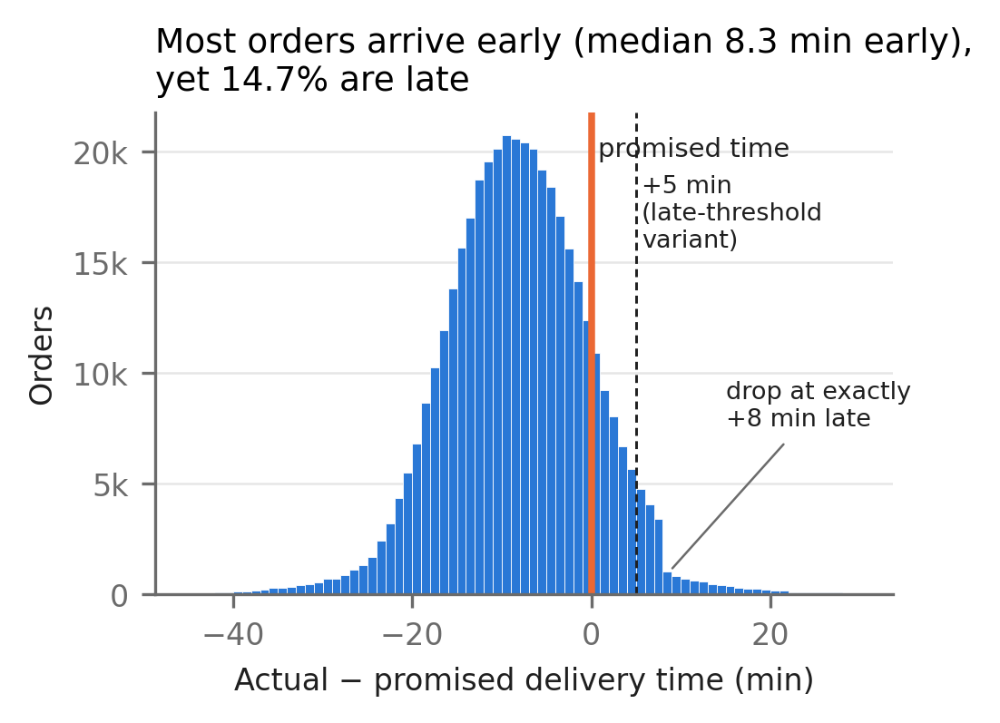

Data & EDA
The raw data needed real cleaning: 654k rows became 546k orders

- 13.1% refused dispatches: the same order offered again, not new orders. Keep the accepted one
- 3.9% pre-booked: timed by the slot the customer chose, a different population. Excluded
- 15% placeholder prep estimates: not missing at random, so kept and flagged
→ Modelling decisionOne row per order; a "prep estimate missing" flag the model can learn from
Data & EDA
Every kilometre adds about 7 minutes, and distance matters in all 23 districts

+7.1min per km
up to 3 km, where 93% of orders fall (5.2 beyond).
Within each district: 4.9 to 7.7 min per km
Within each district: 4.9 to 7.7 min per km
- The spread grows too: 13 → 24 min between the 20th and 80th percentile
→ Modelling decisionDistance is the core feature; long trips need a wider promise
Your pizza · 3.2 km
Data & EDA
Deliveries are slowest at meal peaks: median 34 min at 11:00 against 28 overall

- Lunch at 11:00 is the busiest and slowest hour
- How many orders a district has barely matters once district and hour are known
→ Modelling decisionLunch and dinner peak flags, and time of day as a circle (23:59 sits next to 00:00)
Your pizza · ordered 11:13
Data & EDA
What matters is free riders: over 3 orders per free rider means 36 minutes, not 26

19%
of orders wait with more than 3 orders per free rider: median 35.6 min against 26.4
→ Modelling decisionRider availability became a real-time feature (slide 12)
Methods & evaluation
Tested like real life: the model only ever sees the past

MetricMAE in minutes, plus RMSE, R² and bootstrap 95% intervals
No leaksImputing, scaling and encoding refitted on each fold's training days
DroppedWeekend flag: only one weekend day to learn from
Results & insights
We miss by 6.5 minutes: as accurate as the app's own estimate, once its padding is removed

Your pizza: app 51 · ours 45 · actual 43 min
31% better than the median guess · three models within 0.3 min, so the limit is the information, not the model · 140k test orders, scored once
We do better on short and long trips; the app on medium trips and at lunch.
Results & insights
At the same average promise, the app is still late less often

over 5 min late, both promising 38.2 min on average
5.0% app 6.1% ours

Late orders more than halve at exactly +8 min: someone starts rushing after the order
Except for shorter promises.
Backup B3 · Tuning
Tuning mattered: bigger trees overfit

| Model | Final settings |
|---|---|
| Elastic-Net | α 0.002, L1 ratio 0.66 (30 tries) |
| Random Forest | 200 trees, min. leaf 6, 31% of features, depth 20 (10 tries) |
| Boosting | absolute-error loss, lr 0.038, 76 leaves, min. leaf 70, 800 iterations (20 tries) |
| Boosting q80 | quantile loss, lr 0.055, 29 leaves, 200 iterations |
Random search on the forward CV folds. At 511 leaves: train 2.45 vs CV 6.63.
Backup B4 · Errors
Error differs by district: 4.4 to 9.0 minutes

Backup B13 · Riders
Orders waiting per free rider, by district and hour
Over 3 orders per free rider (19% of orders): median 35.6 vs 26.4 min. Riders counted from past deliveries only.
Backup B14 · Days
Weekends have the same shape, 1–3.5 min slower in the afternoon; no drift within the week

Day profiles correlate at r = 0.92. Mon 17 vs Mon 24 differ by 0.5 min per busy hour. Eight days can't show longer drift.
Backup B15 · Extension
What the extended model learned, and where it beats the app

| Orders | Share | App | Base | Extended |
|---|---|---|---|---|
| All | 100% | 6.24 | 6.25 | 5.92 |
| Under 1 km | 30% | 5.82 | 5.44 | 5.14 |
| 1–3 km | 63% | 6.09 | 6.42 | 6.08 |
| Over 3 km | 7% | 9.44 | 8.23 | 7.91 |
| Lunch (11:00) | 17% | 6.66 | 7.04 | 6.75 |
| Dinner (17–19) | 30% | 6.44 | 6.67 | 6.30 |
| Saturday 22 | 27% | 6.30 | 6.44 | 6.01 |
CV MAE, validation days only. Elastic-Net 6.60 → 6.27, RF 6.32 → 6.00: same gain, so it's the information. Re-tuning chose the same settings.